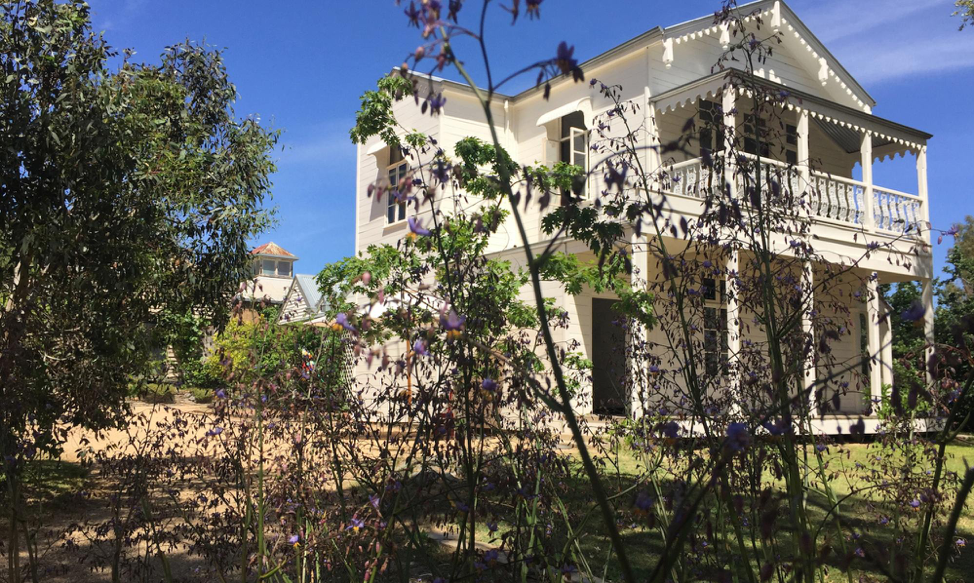

A Laboratory for Thought in Motion
When I proposed SenseLab in 2003, my hope was to create an environment that would learn, over time, how to create conditions for new forms of collaboration across art, philosophy and the political. This laboratory for thought in motion was a speculative proposition that required collective engagement, and so a first call was sent in 2004. This call included a question that remains at the heart of our collective practice: what kinds of events can we craft that are capable of creating a living ecology that values forms of engagement that trouble the mode self-presentation of the conference and the art exhibition, the two major ways in which we are taught to share our work? Instead of foregrounding finished work, could we instead come together with the techniques that move our process, collaborate at this incipient stage rather than at the phase where form is already revealing itself? In this middling of the process, what kinds of conditions could be invented that would facilitate a shifting back and forth between our individual work and an collective field of making-thinking that doesn’t know in advance where it might lead? What kinds of collective practices could be created that are moved not by the institution, not by membership in an organization, but by an appetite for the anarchic share of the event’s coming to form? How could this anarchic share be oriented toward an affirmative politics moved not by optimism (or pessimism) but by the schizz that reorients process?
SenseLab was never conceived as a site, though it has found landings over the years, first in other peoples’ labs and eventually at Concordia University in Montreal. In 2012, it began to proliferate, finding temporary sites in Australia, in Europe, In Brazil and in the US, temporary because the hope is that SenseLab never really learns how to site. To know too well how to site is to become an institution. SenseLab’s nightmare is to know itself too well.
But anything that persists over time risks eventually narrating itself, and SenseLab is no exception. How to keep open and lively the process of subtracting SenseLab from its own narrative, its ways of knowing "itself"? There have been many configurations and populations over the years, and each of them has defined SenseLab in ways that make a global narration of intelligibility impossible. And so the attempt here to bring SenseLab into narration must always be seen as carrying with it a certain ineffability of expression. Throughout these uneasy narrations, SenseLab must be seen less as a form than as the conceptual persona it orients, a conceptual persona that carries living problems, not their solutions. For conceptual personae carry not the truth of the narration, but its power of the false.
A new narration follows from this: narration ceases to be truthful, that is, to claim to be true, and becomes fundamentally falsifying. This is not at all a case of ‘each has his own truth,’ a variability of content. It is a power of the false which replaces and supersedes the form of the true, because it poses the simultaneity of incompossible presents, or the coexistence of not necessarily true pasts” (Deleuze 1989: 131).
Nietzsche’s will to power is at work here, a will always immanent to the event that finds it strength in relation to an overlap of force at its most potent differential. “The power of the false exists only from the perspective of a series of powers, always referring to each other and passing into one another” (1989: 133).
The danger of any narration is that it mythologizes, that it builds institutions to hold narratives in place. What I propose here, in the name of experimenting immediation, is an account that I hope demythologizes as quickly as it enters into a shape, an account oriented not by a subject-participant so much as by an emergent collectivity always reinventing the stakes that bring it into uneasy encounter. For SenseLab is about more-than human comings-together, more-than human in the sense that what comes into formation as event is an ecology of practices, more-than human in the sense that what is planned is not set in advance of the event’s coming to be, but, as Moten and Harney might say, “fugitively planned,” the welling event's own emergent organization playing a key role in what ensues.
This emphasis on the more-than human, on the capacity for the event to activate a quality of participation that doesn’t rely solely on the human, became increasingly important as SenseLab grew and became more literate. The more we told our story, the more it became clear that we were in danger of creating a collective that could only know itself from the inside. To know oneself from the inside is to believe that the constitution of the event is directly linked to the people who are visible in its formation. But events are not like this: they are troubled and energized by affective tonalities that infiltrate their bounds, oriented by the push and pull of ecologies brought simultaneously into being. And so we started inventing techniques to make felt the proliferation of tendencies and consistencies that make up events, working hard to become attuned to forms of participation that complicate both notions of individual subjectivity and of human-centric organization. Moving, for instance, from the forest to the city in the 2012 event Generating the Impossible was an attempt to feel the effects of how an environmental surrounds also composes and participates in the process of making-thinking. How, we wondered, would what began to take form in the forest come to expression in the city? What quality of schizzing would emerge in the transversality of transduction? Conceiving transduction – a shift that creates a new process – as key to an politics that sites in the doing, it became urgent to consider how events themselves craft bodies, how they create emergent bodyings that are composed of and compose with the ecologies that move through them.
The focus on the more-than human was also geared toward challenging the category of the personal. When the personal organizes experience, two main tendencies emerge. First, there is an infiltration of a politics of identity which tend to amplify not what the emergent collectivity can do, but what personal stakes are understood to be present even before the project takes form. While these personal stakes no doubt make some kind of contribution in the event, SenseLab’s approach is to initially background them in favour of allowing the event itself to foreground how it mobilizes political, aesthetic and philosophical problems. The second tendency of the personal is toward the creation of what is too often a normative psychologization that privileges individual narratives. SenseLab turns instead to a schizoanalytic approach which focuses on the group-subject, the agglomeration of collective forces in the event. With attention to how group-subjects both come into formation and express their collectivity, we work from the perspective of what an emergent constellation can do rather than what individual participants owe the event and are owed by it. Our main point of emphasis is that SenseLab is a project that exceeds any individual participant: the project should always be more-than the sum of its parts. This is no easy task: the uncertainty at the heart of the minor sociality that is emergent collectivity, where the production of subjectivity is understood as immanent to the event, inevitably breeds anxiety and anxiety tends to solidify personal stakes. How to escape from the positioning of the personal before it takes hold?
The Free Radical
The concept of the free radical was brought into the mix in 2012 to begin to address this question of how to work collectively with a focus on emergent collectivity and the ways in which it produces subjectivity. The free radical came in through the event discussed above, Generating the Impossible, an event whose focus was on affective attunement and altereconomies of exchange. The free radical, as we envisaged it, would infiltrate the event’s interstices, keeping the event from hardening around individual positions. Operating transversally to the practices of making-thinking orienting the event, the free radical would punctually unglue the position-taking that seeks to tune the event to personal stakes. It would do the work of a trickster around inevitable personalization, creating opportunities for the event to find new orientations capable of diffusing the kind of stabilization that breeds eventual institutionalization. The hope was that the free radical, despite (and because of) its deeply unsettling tendencies, would make it possible to create a culture of affirmation that didn’t fall prey to a desire to settle the event into a culture of consensus, or its by-product, critique. Affirmation is understood here in the Nietzschean sense: active, not reactive. Affirmation is not consensus, that most flattening of practices, but nor is it anything goes. In an always shifting register of minor sociality, SenseLab moves where the experiment takes it, casting propositions aside without looking back if they don’t do their work. We practice saying “yes” in the vitality of an anarchic orientation that carries a belief in this world’s capacity to differ from itself, anarchic because the stakes are not set out in advance according to a pre-given model of the political or the social.
Working from the perspective of the anarchic, thinking anarchy both in terms the anarchic share of the event (those merest of existences that seed future processes without necessarily taking form as such) and from the perspective that an event always exceeds the bounds of prescribed spacetimes of organization, a concept was needed to orient transversally, bringing to the event an attunement to the differential of its schizz. The concept of the free radical was conceived as an intercessor capable of subverting narratives on the verge of stultification by amplifying the powers of the false infrathinly schizzing through any and all accounts of how things should be. While we did have a person in mind for this first exploration of the free radical, the concept was also conceived in a broader way, without a human motor. Affinity groups that might be capable of both incorporating and sustaining the force of free-radicality were composed in advance of our coming together, and across them platforms for relation for seeding affective attunement to the event. With the free radical as concept, proposition, and intercessor, the question was: what does the creative dissonance of the anarchic share of experience do for the event as it unfolds? How does a resonant field of experience that includes the merest of existences affect attunement to the event? What might attention become, under these circumstances? With the benefit of hindsight, I would say that these were early steps toward developing techniques for what we have come to call minor gestures, those emergent forces of variation that shift how an event comes to pass.
The free radical cuts across the event to open it to where else it could go. Always operative, the free radical jumps into fissures, fostering new directionalities that alter what an event can do. Affirmative and joyful, the figure of the free radical is nonetheless uneasy-making in its anarchic tendencies. For its technique is to open things up, to explode them. With this come closures as new paths are taken up: there is much reorienting to do when the ground shifts. The free radical has no care for sites that claim their ground.
SenseLab has never had membership. Membership would make the free radical a member, which would, of course, destroy its potential for intercession. The free radical must be able to become everymember, and every tendency in the event must free radicalize itself.
The issue of membership nonetheless rears its head. Despite there being no actual membership, it is inevitable that certain cultures take hold and, over time, embody a history of what it can mean to be involved at SenseLab, which can lead to feelings of exclusion. Uncertainty can be powerful, especially in the context of the kind of practice that is built with an emphasis on not-knowing-in-advance. Tensions can emerge. But with the intercession also comes great enthusiasm and joy: there is nothing like the clearing of the air that can come from a step sideways. We make this part of our practice: what makes an event-based orientation powerful is precisely what cuts across it. All newcomers bring with them a quality of intercession. The culture of SenseLab actively works to collaborate with the transversality this engenders.
This raises an interesting issue: how to work between the activation of what enters from elsewhere and the inheritances that come from working together over time? There is no question that the force of inheritance makes a difference: a practice that takes techniques seriously and works with the enabling constraints of a structured improvisation over years inevitably develops practices. SenseLab in no way works toward an ethos of “anything goes.” This is the case for material intervention as much as for concept invention. We commit to what we learn together and we stay with the learning for extended periods to experiment with where it can take us. There are practices that underlie this commitment to the thickness of an evolving process. For instance, it is our practice to read closely from philosophical texts with what Russell calls “hypothetical sympathy” (1961: 47). Reading groups are structured to prevent debate. What is important is how the text does its work in its own logic: we read out loud and work collectively to stick to the propositions operative in the materiality of expression of the text at hand. The reading out loud facilitates neurodiverse participation (recognizing that there are always those amongst us for whom words on a page do not order themselves one letter at a time). We record so that anyone can return to the reading at their own pace. We open the reading group to virtual participation (on Skype) for those who are either far away or who prefer the distance of the online world to operate socially or for whom a university is a site too exclusive to enter comfortably. The same is true for movement experimentation and material exploration – an attention to the singular material conditions of our coming into relation is always at the forefront. Our investment in a politics of affirmation does not mean having no constraints. It means working-with, sitting-with the singular ways in the materiality of collaboration unfolds and activate nodes of process. The first thing that would undo this would be a culture of critique and competition. And so we work to avoid any tendency to move in that direction, including any attempt to engage with general ideas. We are aware that the culture of academia loves general ideas, and we resist this tendency to speak in ways that generalize experience: what interests us is always a commitment to how. How does the thinking do its work, here, now? How do the materials activate a transversality? How does the movement shift the conditions of the bodying?
That said, there is no question that leaving the space of intercession open is vital: very often events have been reoriented by new arrivals precisely because these newcomers are not informed by the history of our ongoing practice. And so, over the past fifteen years, we have worked to hone an event-based practice of welcoming difference. This welcoming of difference brings with it the consistency of an ethos. It is not our practice to discuss “our” way. What we do instead is try to hone a mode of listening to the event as it unfolds. A pragmatics of the useless is always attuned to how valuation emerges, colouring the event from the vantage point of its speculative share. The hope is always that the newcomer can feel the stakes at hand and participate in them directly. It is beautiful to watch how often this happens, how often a newcomer arrives in the middling to reorient what came before in ways desperately needed. Almost every day there is an intercession, each of these intercessions shifting the conditions of what we call SenseLab. It would therefore be fair to say that the intercession of the sideways entry is as much part of the inheritance of SenseLab as the years of practice honed in the ongoing work of creating techniques for event-based experimentation.
No decision-making bodies external to the process exist at SenseLab. We have no governing body, no committee for overseeing activities. This developed organically from a desire to work from within the event’s own conditionings. What has resulted is a politics of immediation, a politics sensitive to the practice of middling as lived in the untimely rhythm of time folding. It is a radical proposition to remain open to new tendencies all the time. Free radicalization inevitably gets watered down by the fear of losing our footing. And yet we persist because we know that the desire for continuity, for the recognition of the past in the present, is a real danger as regards the ability to remain attuned to the differential at the heart of event-based propositions.
This is a challenge all political formations face. How to keep the edges open to the elements in ways that enliven those in the midst without creating such a strong tempest of uncertainty that collaborators drift away. How to practice such vivid disorientation without the collapse of the collective? How to build into the sociality that emerges over time enough porousness that it remains open to the fray? For it is only in the fray that new weaves become visible.
SenseLab lives with all of these contradictions. We often contend with failure. The transitions are messy. Growing pains are deep and often agonizing.
Immediation
With the force of the free radical active as intercessor, and close attention paid to the way the minor gesture affects event-ecologies, how else the event can tell its story? What kinds of knowledges are alive in the event and how are they passed on? A question to the anarchive: how can we move beyond mediation, or reporting, in the passage from force to form? How can we compose collectively, working both with past and emergent techniques, without holding fast to the security of habits, material or conceptual? While seeking ways to make experience intelligible, how do we refrain from mythologizing it? How can the immediacy of the event cut through the certainty of a certain belonging-together, a return to the figure of the individual and to the collective as the sum of its parts?
Immediation is a practice more than it is a descriptor. A politics of fabulation invariably accompanies it. Fabulation is altogether different from a practice of mythologization: it is that tendency in the telling that resists organizing the event into the kind of consumable bite-sized description that would narrate it as a linear arc. This kind of telling
free[s] [fiction] from the model of truth which penetrates it, and […] rediscover[s] the pure and simple function of fabulation […]. What is opposed to fiction is not the real; it is not the truth which is always that of the masters or colonizers; it is the fabulatory function of the poor, in so far as it gives the false the power which makes it into a memory, a legend, a monster (Deleuze 1989: 150, translation modified).
Inheritor of oral practices of story-telling, fabulation is how the trickster speaks. As the voice of the free radical, fabulation attunes to the difference between those kinds of narratives that hold the event hostage and those that breed openings. It’s not that these more normative narratives don’t enter the world: they do. Our task is to craft the conditions for events that resist this kind of telling, opting instead for a fabulation that undermines the very question of an event’s localization in a single place, toward predictable ends, activating not the truth of a myth framed by individual accounts, but its power of the false, the power of the event to claim its falsification from itself. With the power of the false, time begins to err, undermining the imposition of continuity. Time as metric is disrupted, but not just that: time folds.
The free radical activates the power of the false in the event. Acting as intercessor, it cuts into what is moving the event and opens that movement to uneasy rhythms. These rhythms are uneasy because their paths are not yet drawn, and because these paths are both asynchronous and dissonant, more multiplicity of cut than site. The free radical pushes against them to feel where they break, and where else they can lead.
The free radical propels a minor tendency to take hold in the event. The work then becomes to move that tendency into a becoming-gesture that shape-shifts the tonality of the event. The free radical does this by activating a schizz in the event. This schizoanalytic gesture involves setting the event’s myth-making orientations in direct confrontation with their power of the false, making felt the story’s own unmaking of itself. With the power of the false a sense of what else enters the event, allowing the contours of a still-transitioning to be felt. The challenge is to refrain from flattening this time of transition. What Nyong’o calls an “angular sociality” is at work here, “a dynamic interaction or entanglement of bodies, each keeping its own time” (2018: 59). This angular sociality, active in the middling of accounts coming into themselves with the force of an eventness which refuses the easy ordering of a simple description of what was, produces the force of a fabulation which is fully indebted to how things came into itself and yet always also in excess of a simple parsing of events. Language will never be a simple ally. The work: to create the conditions for enough elasticity in the event for the story to emerge again differently, told not only in words but also in the language of the ineffable. “Language […] is always ambiguous as to the exact proposition which it indicates. Spoken language is merely a series of squeaks” (Whitehead 1978: 264). And this, in a time of an angular engagement with what also cuts across it, including any attempt to make time neutral, and, as it were, “colourless”: Readings of black art, cinema, and performance must acknowledge the insurrectionary stance taken in the everyday, not just to anti-black times, but to time itself, at least to time considered as a neutral, universal, and, as it were, ‘colorless’ phenomenon. It is the notion of the transparency of time as an innocent unit of measure that I mean to contest in my argument for a thicker and more expansive account of what we can call black polytemporality” (Nyong’o 2018: 115-116).
Fabulation operates in a time of asynchronous weave. Sensitive to the squeaks of language, to language at the edge of comprehension, fabulation is moved less by the necessity to explain than by the realization, always come to anew, that telling is a form of liveness completely connected to the event’s own emergence. Here, stories become intensive magnitudes rather than extensive place-holders. They tell at the limit of what can be known, their work a falsifying of what constitutes the knowable. This falsification is not of the order of a simple untruth: the power of the false is about another kind of truth altogether, a truth of the event in its inevitable permutation. For Whitehead truth refers to how an occasion of experience activates the coincidence of the World of Value and the World of Activity. He writes:
Truth of belief is important, both in itself and in its consequences. But above all there emerges the importance of the truthful relation of Appearance to Reality. A grave defect in truth limits the extent to which any force of feeling can be summoned from the recesses of Reality. The falsehood thus lacks the magic by which a beauty beyond the power of speech to express can be called into being, as if by the wand of an enchanter" (1967: 283).
Truth for Whitehead is a force. It finds it power not at the the surface of appearance but in the potential that shimmers across it. Truth is what appears through an indexing to “a beauty without speech,” a discordant massiveness called forth in the interval of an intercession. Fabulation commits to the power of the false every time it connects to this force, enchanted by the tinge of otherworldliness this carries with it. Rather than morality, what is seeded every time is belief in the world. “An act of fabulation which would not be a return to myth but a production of collective utterances capable of raising misery to a strange positivity, the invention of a people” (Deleuze 1989: 222).
When fabulation textures the event, fabulation acts as point of inflection, making felt the kind of vertigo that emerges of necessity when perspectives are transversalized and time-signatures that hold accounts in place begin to blur. Fabulation tells into this blurring, verging the chronotope in ways that move time out of sync. Mediation is not what is at stake here: the task of the mediator is precisely to keep the horizon line. Fabulation does the opposite: it mobilizes the not-yet already alive in the interstices and makes it reverberate. It catches free radicals at work, activating a worlding that keeps the event uncertain as to where its points of reference lie, falsifying time's linearity.
The power of the false, the capacity for fabulation to challenge what a personalized accounting might want to invent as the event’s truth, is deeply unsettling. Much easier would be to formalize a frame for the event in the name of some kind of overarching truth. To write myths that solidify it, creating the possibility of repetition. But both of these tendencies undermine the very practice of what an event can do and what a more-than human approach can catalyze. Much more difficult, but also richer, is to engage directly in the event’s interstices, in those schizzes where desynchronized accounts are crafted for the uneasy telling. “Fabulation is not an impersonal myth, but neither is it a personal fiction: it is a word in act, a speech-act through which the character never ceases to cross the boundary which would separate his private business from politics, and which itself produces collective utterances” (Deleuze 1989: 222, translation modified). To not cease to cross pradoxically involves a punctuality. The event never ceases to create a limit through which a certain telling takes place that produces a collectivity of utterance. That is to say: the event invariably narrates itself in part because of the difficulty of asserting, from within its own momentum, the swell of its cresting. This telling has the quality of a talking-to-oneself that occurs as we move through daily tasks, sometimes hearing ourselves narrate out loud the act of recalling what we have forgotten to look for in the open fridge. The telling of the event is a kind of seeking-its-bearings, an accounting of the ways in which it composes with the ecologies of practices that are its emergent surrounds. For the event transitions more than it places, passaging experience. Fabulation can catch this telling in the passaging, detouring myth-making tendencies. In this passaging, a “people” is invented, Deleuze suggests, a worlding that is more-than the humans who also compose it. With fabulation, this worlding opens itself each time anew to the passaging. This is where the event, as Whitehead might say, most feels the concern for its unfolding. This is where it emergently attunes to worlds of its making. Fabulation makes felt this worlding, this ecology, which will always, by necessity, exceed its capacity to be told. This telling, at the heart of all events, is a punctual limit, altered at every turn by what the event immediates.
Tigeresque
In November 2014, a SenseLab gathering was organized in Australia. It was composed of two propositions, one held north of Melbourne in the rural town of Avoca, the other held in Sydney. The first proposition was made in conjunction with Lyndal Jones's Avoca Project.

Watford House
The Avoca Project (2005-2016) worked across a community, a house (Watford House), and the question of sustainability as oriented by how an artful approach can alter the conditions of everyday living. How, Jones wondered, might the house become an image of potential and resilience, and how would such an approach have effects that might leak into the wider community of the town of Avoca?
SenseLab arrived toward the end of this process, a decade into Watford House's transformation. The proposition for the SenseLab-Avoca encounter was to see how SenseLab’s approach to creating conditions for more-than human forms of collaboration might compose with the Avoca Project. By then the final phase of the Avoca Project had begun: a Chinese garden in the old sheep yards next to the house had recently been landscaped. Described by Jones as a project that "draws attention to the lack of public gardens in Avoca [...] and acknowledges the important Chinese contribution to the town from the 1850s, when many thousands settled in the area after the gold rush," the garden, entitled "Garden of Fire and Water," punctuated a decade-long inquiry into sustainability by designing directly with the underground flows of water. This self-sustaining garden underscored "that to live-with is an ethos that requires attending to the existing sites of potential," signing the Avoca Project with a final act that would continue to make sustainability in the region felt, even without direct human intervention.
The garden is exquisite. It overlooks the flood plain and the Avoca river, foregrounding the role water plays in this arid town.
The central water element has been created as a wetland that cleans and uses the stormwater from the main street. Plants were selected that directly reference China and thrive in this climate, framed within indigenous and native plantings to situate the garden firmly into this landscape of River Red Gums.
SenseLab’s arrival coincided with the launch of the garden. The only directions we received in advance of our arrival was that we were to bring formal wear: there would be a cocktail party for the garden. In true SenseLab form, we saw ourselves as guests of the garden. In our months-long preparation for the SenseLab-Avoca encounter we spoke often about how best to fulfill our role as guest of honour for the gardens: it was the surrounds we most fabulated about.
No other plans had been set: the question of the event itself was the operative problem. Could SenseLab encounter the Avoca Project such that the gathering might call forth an event? And if so, would the event be capable of bringing into focus an emergent proposition that could enliven what was already moving at Avoca? Could SenseLab bring the force of a lure that might activate the anarchic share in the transversality of the two projects? And if so, what kind of proposition might be made that both included us and exceeded us?
To approach the question of event-creation rigorously involves a long preparation. This preparation is not about planning content in advance, as though the activity could be focalized through a pre-set frame. That would be to disregard the force of the event’s own capacity to orient experience. What is needed instead is a procedure allied to what Moten and Harney call “fugitive planning,” an orientation toward the conditions that seed process that remains sensitive to the emergent quality of the event’s own forces of organization.
In the undercommons [...] the means, which is to say the planners, are still part of the plan. And the plan is to invent the means in a common experiment launched from any kitchen, any back porch, any basement, any hall, any park bench, any improvised party, every night. [...][P]lanning in the undercommons is not an activity, not fishing or dancing or teaching or loving, but the ceaseless experiment with the futurial presence of the forms of life that make such activities possible (2013: 74-75).
At SenseLab, to craft a sensitivity toward the kind of fugitive planning that occurs during an event, we explore and test enabling constraints. Enabling constraints are constraints that facilitate a process of improvisation that is attuned to the quality of what moves through the event. For a year preceding any event, we work to test out the malleability of various constraints, exploring to what degree they close down or open up a process. Starting points for the crafting of enabling constraints proposed for a gathering such as that in Australia might include research on local flora and fauna, animal and insect life; research on local environmental practices. We would likely explore who lives on the land, whose land it originally belonged to and what kinds of histories are told about the land. From these starting points a few concepts might arise that might give us a hint of what kind of constraint might facilitate an entering into the environment otherwise than with all of the more typical assortment of personal stakes that tends to accompany us, especially when we feel out of place. From there, we might propose a series of movement experimentation workshops to see how different qualities of bodying would best respond to emergent propositons. Or we might engage in material experimentation to practice material curiosity, explore a few starting points for collective practices that emerge from materials themselves. Constraints that might emerge from this exploratory stage could include a movement proposition to open the event, a set of readings to study collectively, a technique for listening, a proposition for collective material composition. To keep this at the level of the fugitive, and to work with the force of the propositional rather than with the framing of the organizational, our year-long work is more a guide than a setting-into-place. For what we know of the event is that it modulates on the run, and with this incipient movement, enabling constraints invariably have to be modulated. Fugitive planning is about creating a flexibility of thought and action which is robust enough to be realigned on the fly. Importing an enabling constraint fully-formed from one event to another never works. Each event is too singular, its necessities too unique. The trick is to hone a sensitivity that will come in handy when faced with the event as it plays out. Improvising collectively requires an attunement to what is disabling and a capacity to reorient when needed. To do this from within the event’s movement is the challenge. It requires a sense of how minor socialities are composing at every level of an eventness too complex to parse. Infrathin qualities of perception are necessary, but they are only as good as the capacity to move at the pace of an unfolding in asynchronous time.
Despite rigorous exploration in advance of landing, however, nothing had prepared us for the uneasy way the Avoca Project disoriented us. It turned out that the cocktail party was for the locals, not for the garden! The formal wear that we had brought or made (replete with leaves and branches) was suddenly not what was called for. And the house strangely seemed to know where it stood. We had imagined it more forlorn, less self-composed. With a house quite steady on its foundations we suddenly felt in the presence of a home. Our techniques for the activation of the threshold suddenly felt off. The jetlag didn't help. Here we were, 35 of us from several continents, faced with a project difficult to gauge well in such a short period. Paradoxes loomed: there was a sense, conceptually at least, that Watford House welcomed an intercession toward new ways of thinking sustainability. But there was also a sense that we had arrived too late – that this particular arc of Watford House and the Avoca Project had run its cycle, including the garden, which was now ready to be presented. Another arc was on its way, but here we were, at the interstice, unsure how to compose with what we entered into.
SenseLab didn't want to be a visitor to a project already framed nor did the Avoca Project simply want to host us. The problem was that neither of us yet had techniques to creatively compose with the ineffability of the emerging arc. What SenseLab thought would be enabling constraints turned out to be disabling. We wandered around, at a loss. Part of the problem was that things were more set than we had imagined – the house was beautifully appointed, much more home than "experiment," the surrounds well maintained, and the project itself well-established in relation to a town that had now been interacting with the work for a decade. Everything was gorgeous, including the work the Avoca Project had been able to do with issues of sustainability and community. The problem was not the Avoca Project itself. The issue was one of composition – how to attune to a minor sociality when cracks are not easily felt, when it is not even certain that an emergent collaboration is urgently needed, or needed at all. Despite our not wanting the position, we felt like visitors, tourists. As mentioned above, this was Jones's nightmare: more than once she told us that she didn't want us to see Watford House as a bed and breakfast. She wanted us to be free in our approach to it, she wanted us to invent with it. But it was a house that had well-established needs and habits. Jones knew its functioning better than we did, and she knew the environment in ways that tired Canadians, Brazilians and Europeans couldn't possibly know. And so despite best intentions, the encounter began with frames, and with rules. The rules made sense, and were necessary, given the complex water systems of an arid location, but to begin with rules always sets in place a certain passive-active hierarchy. Passivity, once settled into the weave of a gathering, is hard to overcome, dampening the force of the kind of potential necessary for the emergence of a collectivity created in the event.
An impasse could be felt. A certain waiting took hold. Would we be able to move beyond being visitors to being participants in a process? Would the cracks appear? Were there any openings for fugitive planning? Activities were proposed by a number of us – movement experimentation, sound propositions, conceptual discussions. We followed and participated. Wonderful meals were cooked. But mediation still trumped immediation. Time felt linear. People were on call, waiting to be told what would happen next.
The first two days were dominated by scattered gatherings made interesting by the skills of the leaders. We learned things, we talked, we explored. Individual projects were seeded. There was enjoyment in being together. But there was not yet a sense that something with its own consistency was being generated, something capable of weaving the Avoca Project through it, moving the encounter with SenseLab toward a collaboration that would affect both in ways unexpected. There was some despair. And with the cocktail party approaching, there was some anxiety about where to move next. A group gathered at the local pub began to fabulate. The Avoca Project, the group decided, had a story – it just needed to be told differently so that SenseLab could connect to it. If we could figure out how that telling could happen, we were sure to find cracks. So far, the stories the Avoca Project had told SenseLab were spoken as though they already knew their way. What the Avoca Project didn't know how to tell SenseLab was how the Avoca Project fabulated, how the deeper recesses of more-than human activity affected it, how the power of the false ran through it. The Chinese Garden, we decided, was key. This garden which could stem flows and capture them for its sustainability had a story to tell about how geological time composes with event-time, how the time of an art project composes with the time of worlds in the making. We would stage an investigation to find out what it knew.
For the six of us around the table, the promise of a fabulatory investigation was a release from the concern that had been clouding our experience: now, rather than fitting into a project already defined, we could initiate a joyful encounter with what else Watford House and the Chinese Garden could be. Certain characters immediately emerged: the fish (what was the link between the fish tank in Watford house and the fish brought by a resident of Avoca to the cocktail party?); the possum (what kinds of skylines were the possums creating and how far were they willing to go to create new navigational strategies?); the tunnel (what kind of underground passage did the water flows create and how might these connect Watford House to other worlds?). We spoke to villagers. We checked with each other. We spoke to Jones. No one took us very seriously.
But another quality of perception had been awakened, and some of us were now seeing fish everywhere. On the day before our time at Avoca was to end, with fish on the brain, a few of us decided we needed to return to conceptual exploration. A spontaneous reading group was organized around Massumi's What Animals Teach Us About Politics. This hadn't been planned, but it turned out that several of the participants had the newly published book in their luggage. We decided to begin by reading a passage out loud and go from there. This was the passage:
Think of a child playing the animal. It is certainly easy to sentimentalize the scene. But what if we take it seriously— that is, look to the aspects of it that are truly ludic in the most creative sense. Simondon writes that the child’s consciousness of the animal involves far more than the simple recognition of its substantial form. One look at a tiger, however fleeting and incomplete, whether it be in the zoo or in a book or in a film or video, and presto! the child is tigerized. Transformation-in-place. The perception itself is a vital gesture. The child immediately sets about, not imitating the tiger’s substantial form as he saw it, but rather giving it life— giving it more life. The child plays the tiger in situations in which the child has never seen a tiger. More than that, it plays the tiger in situations no tiger has ever seen, in which no earthly tiger has ever set paw. The child immediately launches itself into a movement of surpassing the given, remaining remarkably faithful to the theme of the tiger, not in its conventionality but from the angle of its processual potentiality.
Remaining processually faithful to a vital theme has nothing to do with reproducing it. On the contrary, it involves giving it a new interpretation, in the musical sense of performing a new variation on it. The child does not imitate the visible corporeal form of the tiger. It prolongs the tiger’s style of activity, transposed into the movements of the child’s own corporeality. What the child caught a glimpse of was the dynamism of the tiger, as a form of life. The child saw the tiger’s vitality affect: the potentially creative powers of life enveloped in the visible corporeal form. The tiger’s vitality affect passes through what a formal analysis might isolate as its corporeal form. But it never coincides with that visible form. The life’s powers that come to expression through the form’s deformations sweep the form up within their own supernormal dynamism, which moves through the given situation, toward others further down the line. This transsituational movement is in excess over the form. It is the very movement of the visually given form’s processual self-surpassing. This is what the child saw— all of it, in a glimpse; all in a flash. Not just a generic animal shape: a singular vital movement sweepingly immanent to the visible form. What children see: the immanence of a life. Not “the” tiger: tigritude. Children do not just catch sight of a tiger form. They have an intuitively aesthetic vision of the tigeresque as a dynamic form of life. It is this they transpose when they play animal. Not onto their own form but into their own vital movements. [...] Across the serial variations, tigritude begins to escape. It begins to surpass given situations in which we might reasonably expect a tiger to find itself, and the modes of importance those situations present. The tensions of tigeresque corporeality in-forms the childlike corporeality in play. It immanently animates it— and is animated by it in return. The replay series stretches out the tigeresque tensions, prolonging them into a transindividual tensor. The situational tensions put into play undergo an inventively deforming pressure that vectorizes them in the direction of the supernormal. Tigritude takes flight. The givens of the tigeresque situation, as conventionally known, are surpassed, following exploratory tensors extrapolating from the child’s enthusiasm of the body (2014: 86).
Animals were emerging everywhere – fish, possums, and now the enthusiasm of the body activated by a tigeresque encounter with a book. The fish, the possum, and the tiger were not, as Massumi makes clear, given forms. They were forces, vitality affects. The emerging investigation, and now the collective reading, was not bringing them, as animals, to life: it was activating experience such that it might now be capable of becoming transsituational, in excess of this moment, of this form. The Avoca Project was becoming self-surpassing. Of course all of this was still very tenuous, but the seeds for a shift were there. Which is why one reading could not be enough: the next and last day we decided to return to the passage again, despite being very short on time.
By now the tigeresque was making its way into the weave of the event. Something was doing. And then, a strange event occurred. Someone decided to spray-paint the desert lawn bright orange with these words: “To avoid predetermination create a field with at least three elements.” The graffiti – an engagement with the tigeresque quality of the more-than in Massumi's text – sought to highlight the necessity of the minor sociality of emergent collectivity, but it did so at grave risk. The landscape we left behind was scarred and would remain so until the next rain, a year in Watford House’s future.
The orange spray paint didn't quite register. To this day, I'm not sure why. We were busy, the event hadn't quite taken place (the encounter remaining a gathering rather than exceeding the sum of its parts) and the time spent together had been challenging – interesting and even joyful at times, but heavy with misunderstandings and uneasy encounters. There was laundry to do, and cleanup, and the grounds were large. Many of us walked by the large expanse of bright orange words, but somehow no one reacted. Until we were gone.
It was an hour or so into the drive toward Melbourne when someone in the car with us mentioned the grass, and the orange spray-paint. We gasped. Surely this hadn't been a good idea? But if it did happen, it must have been condoned? I felt uneasy.
A few hours later, the first text message arrived. I could feel the rawness. And I knew the risk of answering: the event, still uneasily coming into itself, could too easily be reduced to the personal. The desire to single out an individual and blame them for the act was potent, even in the wake of a gathering that had collectivity and collaboration as its aim. What would an apology mean in this context? Wouldn't an inevitable hierarchy be introduced through the act of taking charge, as though the event happened in my name?
As I was thinking this through, I received a note from the investigation. It read:
Fishy Business November 26 2014 Regarding other fishy business ... It was such a well designed urgency to get to the kangaroos on Tuesday night that I fear that I was unable to clearly tell of all that I uncovered. […]. I too am suspicious of the architects ... they are very consumed by the taking of measurements and spinning stories about cloaks. I had one of them in the car on the way home but I couldn't detect any deviation within the story to catch them in the act ... my jury is still out. There is something going on with those possums ... however, when one was scratching at the back of my tent it was pretending to be a wombat, then a kangaroo, not a fish ... I suspect it may be yet another diversionary tactic! […] There are a couple of anomalies that I stumbled upon... how [redacted] knew about the fish being flying fish is beyond me. Likewise with [redacted] ... he knew that the fish ate the Chinese. Perhaps [redacted] has been informed through some pragmatic instructions (bequeathed recipes?) for the preparation of the fish meals ... if this is the case, the usefulness of this information is likely to be questionable so further effort here may not be worthwhile.[…] This is all that I managed to gather over the few days in Avoca. I hope that it is helpful and that we might finally uncover and understand what has really been going on at the house and garden. One last detail I noticed is the difference between orange fish and fish of other colours. The fish on the bag is green ... and remember we were not sure how the actual real fish appear. Cheers and all the best,
The way forward was clear: rather than dealing with the text message directly, responding one-on-one to a group issue, a collective response was called for. I decided to open up the investigation beyond the six initial members. This was the first message sent. 18 people were copied.
The Investigation Nov 27 2014 Dear co-investigators, I’ve put this list together carefully. I think there are a few missing. […] I’ll trust you to know where to send it next. I’ve had a studied report from [redacted]. Since some of it is confidential, I will only touch on the salient issues. - We’ve left Avoca. - Orange spray paint may contaminate the soil in the guise of philosophy (or was philosophy left to contaminate?). We fear this may have repercussions. Is [redacted] a double agent? - The green fish has turned into an outline. There is a strong memory of its greenness. Fish meal still seems to be a strong clue. […] - The vortex is awfully close (and yet [redacted] guards the fish). - If the fish are the outline, the semblance is near. - The tunnel entrances seem to have been masked by the tents. I’ve seen a picture. It’s possible that you will get access to that image. She holds a clue. - [redacted] again: she finds the holes. - Why is [redacted] measuring? I’ve included you here, though there is some concern about whose side you’re on. Architects are very suspect in this scenario of dissimulated gardens and covered-up tunnels. We will need a copy of the architectural plans. - [redacted], after investigative reporting, you have come out more Australian than Chinese. This makes you a fish, I think. We’re keeping you onboard for now. I know you think you are a meerkat. We’re not sure where you are going with this. Please elaborate. - Something about [redacted], [redacted] and fire. I wonder whether [redacted] isn’t also implicated. I’d like to hear more. And about rabbits. Did [redacted] think eating them would make them less of a pest in Australia? Is there a parallel with the Chinese? - For now, [redacted] must be treated with caution. She knows more than she admits. Yours truly,
Two days later, 3 missives in, with 8 more people copied, but 2 deleted: Incoming Cargo Nov 29 2014 I can still feel the delicate brushing of goldfish fins and tails against my cheeks. They have a strange attunement with my heart flutters. Despite appearances I haven't left the Avoca vortex. [redacted] knows this and is helping me not get sucked in too deeply and drown. That is the real reason he had to stay in Melbourne. [redacted] is making sure that the tunnel has wi-fi, and through her angelic connection she utters revealing philosophical statements that help me think into staying afloat. [redacted] - we know that you are pretending to know little about this vortex tunnel, but it became clear as I measured up the House that you have at least one fishing line tied to your finger that traces out its turbulence. I am guessing you want us to admit what we know before you confess. There are many lines that I measured up, and not all of them were perceptible by the laser measuring device. [redacted] and [redacted] have other antennae – [redacted] is organic, [redacted] is elastic. Each has different insights. [redacted] slips under tents and feels out what they hide, but she doesn't seem ready to tell us everything. Perhaps she is crafting a new escape hole? I think [redacted] knows the cure for [redacted] contaminating paint, which is making the tunnel smell fluorescent, like a blinding light up my nostrils. [redacted]: please help. [redacted] is with me in the vortex, and I can tell you that she has a special connection with the blind white tower, which played a major role in past Avoca fabulations. She retreats there on occasion, half way between the Chinese garden and the House, to do some measuring up. Her plan is beautifully simple. [redacted] tells me that the possums are indeed staying in contact with [redacted], who has her own very special connection into the vortex tunnel. Keep a wide eye on her. In the vortex with the fish, [redacted], and the possums, I can now reveal that there is also a giraffe. [redacted] is channeling the meerkat. Will they arrive soon? I think they could have something to tell about the giraffe. [redacted] knows something about a winking tiger, and I am expecting to find out more about this on Monday. I get the sense that [redacted] feathers in the Chinese garden have something to tell us about a wise bird somewhere in the vortex. I have been trying to get my chicken to help me trace the bird-esque, as we vortex together in the garden, but she was quite busy listening to earwigs. Yesterday [redacted] and [redacted] led the way to a clue that has gone by unnoticed: the logs. Two massive logs out the front of the House. [redacted] is the double of the Log Lady, and speaks the logs' giant, doubled up words. As the Log Lady said in episode 8 of Twin Peaks: "Can you see through a wall? Can you see through human skin? X-rays see through solid, or so-called solid objects. There are things in life that exist, and yet our eyes cannot see them. Have you ever seen something . . . that others cannot see? Why are some things kept from our vision?" Now think about how that statement might be doubled! [redacted] has good reason for not revealing everything. After some investigative work this morning I discovered that [redacted] is also called [redacted]. She is a double agent to be sure, and may be essential to this investigative trail. I think she knows about the flutters of the fish, and her deep micro-attention to connective tissue is very much required. Could it be that the vortex is not only full of creatures, but is the very creature we all need to know? As [redacted] said, I had a premonition of the vortex before we arrived at Avoca: The House the Vortex Built, was already in my mind. The goldfishy flutters in my heart might be the hole I need to measure up before I can offer any more clues. Yours,
42 responses in, many of them arriving in the nonlinear swirl only gmail conversations can create. 24 people copied.
Incoming Cargo Nov 29 2014 Oh no. More fish? What is this about green fish? I couldn't help overreading so I have to point out the following... Those fish were clearly orange (apart from the four almost invisible small black ones...and one is already beginning to change colour I notice...) For me it was all orange and now it is the seepage of orange that remains... So there are the fish. Well, I still see orange despite this mention of green. And then there is the striped orange of the tiger as you noted [redacted], the one who moved into the balcony room on Tuesday and now refuses to leave. Little [redacted], who is entirely at home lying with the fish seems also comfortable hanging out in this tigeresque space. More animals she seems to be saying. We need better representation amongst the 64 long legs in the forests of the night. Don't you think that is a strange coincidence? 64 legs. Because '64' was already there on every door before those 64 legs appeared. It was the long orangy-reddy stripe on the doors. Did you see it? The sign '64: Before Completion'? (I didn't like to mention it but, talking of 'before completion', those slices of fish that suddenly appeared in the kitchen, then on our plates, were altogether too close to orange in their pinkness. I did go in and count and was relieved to find that all eight were still there in the other room, swimming easily. Phew. I don’t think they knew what was going on. And then in the hardness of midday there is orange all over the ground on the struggling grass apron in front of the house. I'm relieved to read that some of you also noticed it. Hard to decipher though, hard to know what it is doing there. Some strange message of pain that has seeped up from China perhaps. One day when it rains later next year, it will wash away I think. Or perhaps it will burn to bare earth if the whole house is consumed by the orange of summer fire before the bell can be rung and we desperately count people at the gate. We will need 64 long legs, four short ones, many fins. [redacted], does that measuring device count legs as well? The tiger will not be counted of course. It will simply refuse to leave, that tiger, even though it knows well enough about the call of the bell. It stays, entirely comfortable, up there in the balcony room. The possums, however, are wary. As they should be. To make sure they realize this is a new dispensation, stones have been thrown against the tiny orange flames that bring them out of the shadows. And there is the smell of urine still there as a declaration of war. And the hard-orange of the pomegranate blossoms suddenly seen in a back garden now without weeds, and the yellowy-orange of the much desired mango that appeared right at the end. So, of course there must also be double agents (which changes the leg count) for all this to have occurred. And perhaps a vortex or two. Anything is possible. Everything has changed. Yours,
And so it continued, from November 26 to December 4, investigators added and withdrawn, writing not only from Australia but also from Berlin, and Montreal, 90 pages in all. Everything had changed, as the November 29 message announced. Something else had begun to happen, and with it, an event was taking form.
The investigation that became the fabulation was never really interested in the past. It was interested in creating a time that could compose with futurities in the making. For the gathering to pass into an event, these futurities must be there in germ. This germ of activity is what the fabulation revealed, a past schizzed.
When we arrived at Watford House, there wasn't yet in the collective a sensitivity to how else the project could expose itself, how else it could be known. As is often the case, the stark presentness of a strange encounter took precedence over its fissures of futurity. None of us really knew where to look, how to compose with what we might find lurking between garden and house, house and village, past and future. And so, the group fissured into small clumps, the focus more activity-based than event-orienting: someone created an architectural plan of the house; a few people cleared the garden of weeds; some cooked and cleaned; some prepared a site for peeing into mason jars to steer the possums away from the fruit trees; some visited the garden and the surrounds; some went for a walk along the flood plain; some spoke to villagers; some sat at the pub drinking beer; some skyped home; some slept. Children played, tents were built. Time passed.
It is the fabulation that finally did the work of shifting the gathering toward an emergent collectivity, making it an event by folding time toward the asynchrony of its infrathin dimension. The fabulation made cracks felt, and created opportunities to enter them. Where other constraints had been disabling, the fabulation was enabling precisely because it captured us in the act, in a middling of expression where the anguish of the orange schizz and all that it carried could be addressed by other means. The fabulation allowed the collectivity in germ to express itself and to invent worlds for that expression. While names were used in the text as it moved across the network, there came with the force of the fabulatory gesture a sense of the impersonal – all voices made a difference, as they do in investigations.
The fabulation followed us to Sydney, where the second SenseLab proposition – this one focused on knots of thought and experimenting with the minor gesture – was beginning. Many people now gathered had not been to Avoca, but the fabulation, printed on large pieces of paper and taped to the wall, accompanied us for the next 8 days as we worked in the large UNSW Art and Design gallery. Few people read it as a whole, but its presence made a difference, particularly as we collectively tried to give voice to our uneasiness about how narratives are made – the demonstrations for Michael Brown's death were happening simultaneously in Ferguson.
For the telling to be an event, its capacity to impersonalize is key, even (and perhaps especially) in cases where there is a desire to direct blame. This tension between the personal and the impersonal was felt keenly in the wake of the grass graffiti. Despite the fabulation's gaining momentum, and its growing ability to reorient the field, some participants nonetheless felt that the individual who had painted the grass should apologize for what was considered by some to be a violent act. When she resisted making the act her own, when she preferred to think of the act as the collective inflection the event needed, they blamed her for not taking responsibility. And, by extension, they blamed SenseLab. What was overlooked, however, in this painful play of accusation, was the force of enthusiasm of the body, the tigritude, that was moved to paint orange, that was moved to schizz the event. For the painted grass was the cut, the schizz that allowed the schizoanalytic gesture of the fabulation to take place.
It is noteworthy that the words themselves the spray-paint highlighted were never returned to in the discussion of who was to blame. Despite the power and lyricism of the fabulation, the marked landscape was remembered by those most troubled by the graffiti only as a scar. What this reaction neglected was that the writing called for nothing less than that multiplicity orient the field. This wasn't a personal act, it was called for by the event! Perhaps not in this shape exactly – but the welling event desperately needed to be schizzed. This is what the fabulation, despite a great uneasiness, was able to make apparent. The orange had already been seeping long before the spray-paint foregrounded it. What the words did was orient the orange, move the orange tigeresquely toward fish and fire, toward tents and Bea the dog, toward the vortex and 64 legs and pomegranate flowers and mangoes, not all of them orange, but all of them carried by an oranging spell. The fabulation activated the vortex, opening the breach toward a creative limit where new worlds could be inhabited. The fabulation made it possible for the collective to begin to emerge as collective. It immediated collectivity, transforming personal stakes into the fraught field of group subjectivity.
Collectivity extends beyond a moment in time. This was the strength of the SenseLab-Avoca Project encounter: that it invented itself through the fabulation, in the passage of a time more durational than chronological. A year later, returning to Australia, I met with Jones. It was time, we decided, to return to our collaborator, Watford House, and to see what the SenseLab-Avoca Project encounter had been able to do. The conversation was tentative. Had the Avoca Project benefitted as much as SenseLab had? Had the politics of fabulation and its immediating power also made a difference for the Avoca Project, or did the orange simply leave a scar that spoke of non-attunement in a field of difference? The story began to fabulate once more as we listened to each other, alive in the knowledge that we were both speaking as intercessors to a participation alive with more-than human tendencies, ventriloquists for a group-subject still in transformation. It was a rich conversation, a real attunement. And in the event of this exchange, which happened over several days, with many rebeginnings, we heard the story once more. And it had morphed, already different that what could ever have been known, would ever be known. This is the power of the false at work.
It was not a scar, it turns out. The rain washed away the paint shortly after we left, and in any case it had never, it turns out, been spray-paint, but water-soluble marker paint. In the end, the actual graffiti seemed less important than the agony of collaborating with forces that exceeded us. The orange words were not so much what was left behind as what would be reactivated, return after return. A memory of orange, of turmoil, a swirling collective composition, a tentative encounter with the fragility at the heart of all collective actions. What was left burning through the soil, on the Avoca landscape, was not so much, in retrospect at least, the writing on the grass. What was left was an uneasy story ripe for the telling. But, like all fabulations, nothing we will wrote will ever have been quite true. So perhaps it is important to end with this one last image, one that was kept from me at the time because of my horror of snakes.
For months before our arrival at Avoca, I worried about snakes. Jones, like all those I ask, promised me that snakes were actually quite shy and would be unlikely to show themselves. I wasn't convinced: everywhere I go these animals that horrify me at the most nonconscious level seem to appear to greet me, to my snake-lover-friends' delight. I didn't see a snake at Avoca. But it turns out a snake did appear, camouflaged in our trace, standing guard at the entry to the house: the day after we left, a tiger snake was seen resting amidst the orange stripes of the lawn. Snake and stripe, tigeresque. The more-than human in all its animality, lingering in the n+1 of the field's incessant necessity to tell it otherwise.
The politics of fabulation is this capacity to make felt the force of immediation at its most impersonal limit. The fabulation at Avoca was not "about" anything, not about the orange "spray" paint or even the tiger-snake-fish that marked the passage of our disappearance. But it was the orange that schizzed the fabulation into motion. The politics of fabulation composes with the schizz. Without the schizz there is no event. A fabulation's content can never be seen as limited to the story itself – fabulation is the affective field that makes composition possible, bringing thinking into act. In a political register, this suggests that there is potential in fabulation to get beyond the kind of narration that holds things in place, opening them to the what else that also beckons. All events are more complex than they seem, and modes of encounter that play, tigeresquely, with that complexity can and do change their course.
Beyond Myth-Making
Fabulation is vulnerable to capture. Its other, myth-making, is always at its heels, seducing us with the promise of intelligibility. How to keep the wildness of fabulation active in the retelling and reorienting of our everyday practices? “This is how it is,” we say, or at least how it’s been, its having-been constitutive of what will be capable of coming to be. And we’re not altogether wrong. It is like this. Today, or yesterday. But it was also much more, in a flash. Already, another shape has begun to take form, a shape relationally attuned to the inheritance of the "it is." What myth-making tendencies will have missed in the description of what things do when they shape each other will always have been the relational field, the inheritance not of form but of formative force.
[W]hether explicitly or not, narration always refers to a system of judgement: even when acquittal takes place due to the benefit of the doubt, or when the guilty is so only because of fate. Falsifying narration, by contrast, frees itself from this system; it shatters the system of judgement because the power of the false (not error or doubt) affects the investigator and the witness as much as the person presumed guilty (Deleuze 1989: 133).
The kind of telling which does justice to the event in its ongoing capacity for metamorphosis can only emerge from the event itself and be told in the squeaks of the event’s own perpetually falsifying forms of articulation, in its ticcingflapping.
Falsifying narration in the name of the event’s capacity for metamorphosis is unsettling because it refuses to settle the event. Everything is affected.
The point is that the elements themselves are constantly changing with the relations of time into which they enter, and the terms with their connections. Narration is constantly being completely modified, in each of its episodes, not according to subjective variations, but as a consequence of disconnected places and dechronologized moments (Deleuze 1989: 133).
With the power of the false, the event has multiplied, its schizzes made palpable: “contrary to the form of the true which is unifying […] the power of the false cannot be separated from an irreducible multiplicity” (1989: 133).
This multiplicity is serial. The event has schizzed and with it the certainty of what it might have been or what it might become. The event has immediated, an immediation that is already part of a series, a series that is always more than the sum of us, always more-than human. The event is never just the one it has become in its actualization: it is also the many of fabulation’s polyvalent accounting.
The cut in the event, its schizz, never lends itself to an overview. Its felt effects are rhyzomatic, undermining the sense that there might be a knowability that keeps everything in perspective. Fabulation as a technique of immediation makes felt the durational force of the cut, makes resonate an experiential time that doesn’t know how to be counted. For while the cut is absolutely punctual, immediate, it cleaves the event in ways that recalibrate it, immediating. This couples two kinds of time: the time of the now and the time of the will have been. Time becomes operative, experiential. Time folds.
Emergency
But what of the urgency, even the sense of emergency, at the heart of the now of immediation? Social justice activists know this problem well. Everything matters, all the time, the body poised to leap, the nervous system on high alert. Enthusiasm, excitement, and then, too often, chaos, or entropy, or inertia. Absolute movement caught in the vortex of everything the event could become. Madness. Burnout.
This state of extreme overactivation is familiar to all who experiment with emergent collectivity. The event takes us, its absolute movement swirling us within an unbounded spacetime that is often temporally and spatially at odds with the rhythms of the everyday. No points of reliance are available. Perspective is long gone. The body becomes warrior, tense with anticipation, thick with the trauma of what have now become life and death stakes. Adrenal overexertion, there is no calm here where the event has become us.
Too often, in the face of this overlap of focused momentum and deep exhaustion, an uneasy shift happens toward the personal. "I can't do it anymore," we hear ourselves say, as though this were all about us. The shaping of emergent collectivity has been reduced to our cells. The event, we believe, needs us to continue. A new kind of “personal is political” emerges in this intense constellation where the edges where politics and life and art and philosophy co-compose are overridden by a sense of breathless engagement: the state of emergency overcomes us.
The stakes are enormous, and many of us feel them today. Avoca's fabulation did not have these stakes, but the concurrent event of Michael Brown's death did, and we felt it. Urgency was not misplaced. The weight of the world we compose with, a world of austerity and neoliberalism and racism and exclusion which every day undervalues what collective living can be, is a heavy burden to bear. Many of us wake daily with an almost hopeless feeling of urgency, the body poised in a state of acute tension. As months (and centuries) of attacks against black life continue, as more gun violence erupts and wars are fought, as austerity measures undermine our everyday existences and climate change threatens to foreclose the future, as settler-colonialism persists, as we continue to watch the horrifying accounts of refugees streaming across borders looking for a safe landing, how does collective experimentation make any kind of difference?
This is a question SenseLab struggles with. But whenever we come face to face with it (again) we remind each other that collective experimentation is not a choice. It’s a mode of survival. For experimentation around techniques for group subjectivity provides ways to reenter the political from another angle. A politics of fabulation seems important in this context. Political events are often lived in the time span of media events – acutely here and then completely gone. The political is experienced as staccato rather than as durational, one violent act overshadowing the next. But as all activists will attest to, the work continues even when the attention wanes, and it is often in the waning that the exhaustion settles in, despondency taking over as the status quo returns.
How the collective makes a difference is often not part of the telling. What is told is told in the sound bites of new myth-making strategies, the complexity of fabulation too unwieldy for the facebook “like.” But the fabulations are there – the work is to draw them out. What kinds of techniques might be invented to assist us in orienting urgency away from a constant state of emergency? How might we bend our practices toward the desynchronous time of fabulation, even while we are living the emergency? What might the minor sociality of emergent collectivity make possible in this context? What can we do collectively so that the merest of existences also make themselves felt?
The primacy of action has been rightly criticized as connected to capital, as operating in tandem with the accelerated time of capital's constant need to forecast the newest new. SenseLab asks: what other modes of activity are alive in the act? What kind of telling accompanies what Massumi calls bare activity, activity not simply understood in terms of its spatial extension but in its intensive magnitude? Can we attune to the zigzag movement that cuts across the front lines and create with the intensity of a side line? Is there a way to rally across different qualities of line? Can we make the line a field?
A durational field is always immediating. The question of how to compose with the capacitation of the field in act is the one the SenseLab most contends with. How to know when our bodies need to be counted (which lines actually need us to be standing there, numbered amongst those also marking the occasion)? How to know where subtraction is more important, where our presence must be backgrounded in lieu of other qualities and tenses of action? How, in the mix, to always maintain an attunement to the more-than human? How to live the modulation of the act such that we don't simply fall prey to capital's mandate that we do more, be more, bending to capital's infinite need for surplus and accumulation? How to keep the enthusiasm of the body transversal, beyond capture? How to compose with altereconomies in ways that do their work through the creative fissures of capital's leakages without turning these acts into moral imperatives? How to create time for the minor sociality of emergent collectivity in a world that asks so much of our time, of our too-human time?
SenseLab seeks to immediate where lines are composed, where they cross, where they perish. Free radicals are key: activated in the telling, in the relation, motivated by the power of the false, the free radical exposes the variability in experience, replacing and superseding “the form of the true,” by making felt “the simultaneity of incompossible presents,” “the coexistence of not-necessarily true pasts.” To create openings for free radicality, techniques will need to be invented that are capable of creating the conditions, in the event, for the activation of its fabulatory tendencies. This will mean attending to the pulse of immediation and moving to the schizzes it produces.
Emergency lives in the urgency of now, this time, this only time. No practice can function always in the state of emergency. The work of the free radical is to supplement the necessary pull of emergency, to compose with the complex time differential of the act. Emergency is with us, and it is here to stay. How to work with the doubling of time this calls forth – the time of the now and the time of sustained action? How to make sustainable, in a more-than human register, the acute sense that all is in the balance? How to not become rigidified by the tension that comes with the sense that there can never be enough action to turn the tides? All scales of action are present in the flash of tigritude. How can the act of activism produce an enthusiasm of the body that carries, in a flash, all these scales, all these durations?
Perhaps the first step is to recall that the flash is transductive: the child does not imitate the tiger. The child immediatingly connects to the dynamism of the tiger's enthusiasm of the body: the child activates the form of life of tigritude.
A politics of fabulation does nothing less. It composes at all scales of existence, activating the dynamism of experience in the making. Cutting across more normative tellings, it transversalizes experience to give power to all that courses through it including what remains only infrathinly felt. In so doing, it allows the edges of the political to resonate differently, collectively, durationally.
The force of immediation in a politics of fabulation does this: it takes us out of the centre. It opens the present to its schizz. And it teaches us not only that “I” is another, but that the event is not me (Deleuze 1989: 153).
SenseLab has an appetite to activate the transversal contours of a life in the making, a mode of existence that can only know itself through the falsifications it will become allied to and will then leave behind. This coming and going takes continual work, especially the going. We have to learn, again and again, how to subtract ourselves, how to do this daily work without becoming subsumed by it. How a practice does its work, how a practice creates the conditions for an emergent collectivity, has to be reinvented each time anew, and with this, our role in it, our place in it has to reinvented as well. It can never be solely about how we did it before. And it can never really be about us. This does not mean that what has come before has no importance. It means that we work from a beginning always rich with inheritances that remain open to deviation.
Experimenting immediation is shape-shifting: tigeresque. Free radical intercession produces an enthusiasm of the body. We are not the centre of experience, tigritude is, vitality affects are. It is here that we must begin, shifting from our belief that we are the center, composing instead with other scales and tempos, with the minor gestures of geological time, affective time, event-time.
To know time differently is to feel how the more-than of existence composes us, composes with us. The political is never within reach. To have reached it is to have organized it into myth. To be politically engaged, to open up fields of emergent collectivity is not to have willed them into existence, but to have been moved by them, to have been composed by them. Our task: to become schizoanalytic experimentors at the edges of experience where the intercession of the free radical unbinds linear narration, freeing the bonds of time prescribed. Our task: to become sensitive to a composing-with that will never tell the true story of how emergent collectivity briefly came to expression. Our task: to move at the rhythm of free radicals who affirm the schizz of immediation. Our task: to destroy, with all the force of the free radical, that which too easily conforms to our image, to our need to recognize ourselves in the work we do.
Notes
Our first “home” was Sha Xin Wei’s Topological Media Lab at Concordia University (2004-2005). From there we moved to the Montreal-based Society for Art and Technology (2005-2008).
Will in Nietzsche is never the will of an individual. The play is always of force against force. Deleuze writes: ”Nietzsche's concept of force is therefore that of a force which is related to another force: in this form force is called will. The will (will to power) is the differential element of force. A new conception of the philosophy of the will follows from this. For the will is not exercised mysteriously on muscles or nerves, still less on "matter in general", but is necessarily exercised on another will. The real problem is not that of the relation of will to the involuntary but rather of the relation of a will that commands to a will that obeys – that obeys to a greater or lesser extent. " 'Will' can of course operate only on 'will' – and not on ‘matter' (not on 'nerves' for example): enough, one must venture the hypothesis that wherever 'effects' are recognised, will is operating on will" (BGE 36 p. 49). The will is called a complex thing because insofar as it wills it wills obedience — but only a will can obey commands. Thus pluralism finds its immediate corroboration and its chosen ground in the philosophy of the will. And Nietzsche's break with Schopenhauer rests on one precise point; it is a matter of knowing whether the will is unitary or multiple. Everything else flows from this. Indeed, if Schopenhauer is led to deny the will it is primarily because he believes in the unity of willing. Because the will, according to Schopenhauer, is essentially unitary, the executioner comes to understand that he is one with his own victim. The consciousness of the identity of the will in all its manifestations leads the will to deny itself, to suppress itself in pity, morality and ascetism (Schopenhauer The World as Will and Idea, Book 4). Nietzsche discovers what seems to him the authentically Schopenhauerian mystification; when we posit the unity, the identity, of the will we must necessarily repudiate the will itself” (1986: 7).
Brian Massumi and I have written at length about the event both in its organization and in its aftermath in Thought in the Act: Passages in the Ecology of Experience (Minnesota UP, 2014).
Brian Massumi and I discuss Generating the Impossible in detail in our description of SenseLab techniques and enabling constraints in Thought in the Act: Passages in the Ecology of Experience (Minnesota UP, 2014).
For more on the politics of affirmation as distinct from an optimistic politics, see Erin Manning “Postface – Affirmation Without Credit,” in The Minor Gesture (Duke UP, 2016).
Deleuze writes: “Belief is no longer referred to a different or transformed world. […] Because the point is to discoverand restore belief in the world, before and beyond words. […] What is certain is that believing is no longer believing in another world, or in a transformed world. It is only, it is simply beleiving in the body. It is giving discourse to the bidy, and, for this purpose, reaching the body before discourses, before words, before things are named […]. Artaud said the same thing, believe in the flesh: ‘I am a man who has lost his life and is searching by all means possible to make it regain its place.’ […] We must believe in the body, but as in the germ of life […] which bears witness to life, in this world as it is. We need an ethic or a faith, which makes fools laugh: it is not a need to believe in something else, but a need to believe in this world, of which fools are a part” (1989: 172-173).
Deleuze’s concept of the intercessor has been mistranslated as “mediator.” The intercessor is an immediating force – the exact opposite of a mediator. For the full text, see http://eng7007.pbworks.com/w/page/18931080/DeleuzeMediators
The full quote reads: “In studying a philosopher, the right attitude is neither reverence nor contempt, but first a kind of hypothetical sympathy, until it is possible to know what it feels like to believe in his theories, and only then a revival of the critical attitude, which should resemble, as far as possible, the state of mind of a person abandoning opinions which he has hitherto held” (1961: 58). SenseLab’s approach is one of immanent critique. For more on the concept, see “Against Method” in Erin Manning The Minor Gesture (Duke UP, 2016). See also Brian Massumi “On Critique” in Inflexions (4) 2010 https://www.inflexions.org/n4_t_massumihtml.html The concept comes from Gilles Deleuze. See Daniel Smith and John Protevi’s entry in The Stanford Encyclopedia of Philosophy (Spring 2018 Edition) https://plato.stanford.edu/archives/spr2018/entries/deleuze/ They write: “Deleuze attacks Hegel and others in what we can call—though Deleuze did not—the “identitarian” tradition first of all by means of a radicalized reading of Kant, whose genius, as Deleuze explains in Kant’s Critical Philosophy (1963), was to have conceived of a purely immanent critique of reason—a critique that did not seek ‘errors’ of reason produced by external causes, but rather ‘illusions’ that arise from within reason itself by the illegitimate (transcendent) uses of the syntheses of consciousness. Deleuze characterized his own work as a philosophy of immanence, arguing that Kant himself had failed to realize fully the ambitions of his critique, for at least two reasons: first, the failure to pursue a fully immanent critique, and second, the failure to propose a genetic account of real experience, resting content with the account of the conditions of possible experience.”
In the English translation, fabulation is mistranslated as story-telling. While fabulation is a kind of story-telling, it is vital to the understanding of the concept that it be understood as a deviation from mythologization forms of narration.
Tavia Nyong’o’s conceptualization of “afro-fabulation” in Afro-Fabulations is an example of how fabulation facilitates encounters with modes of telling that fall out of the generalized account of what already counts as the political and the social. He writes: “How might we begin to make sense of the paradoxical vibrance of a form of life endangered, or even erased, by efforts at documentation and representation? What do we do with feelings that resist retrospective vindication? In this book, I am interested in answering such questions through a critical and fabulative archiving of a world that ‘was never meant to survive’ as Audre Lorde memorably put it – and a world that, I would add, was perhaps also never meant to appear” (2018: 3). Nyong’o’s coining of the concept of afro-fabulation as what brings to appearance what would otherwise remain erased is very much in tune with the politics of fabulation foregrounded here in terms of SenseLab practice. Working with Bergson’s concept of fabulation, Nyong’o aims to explore how “the irreversibility of the flow of time is the paradoxical source of freedom” can be coupled with a of study of blackness to ”rearrange our perceptions of chronology, time, and temporality” (4). Afro-fabulation, for Nyong’o, is “a theory and practice of black time and temporality” inspired by Glissant’s Poetics of Relation (5). Connected also to Hartman’s “critical fabulation,” “[i]t is an insurgent movement – in the face of an intransigent and ever-mutating anti-blackness – toward something else, something other, something more” (6).
On angular sociality, Nyong’o writes: “The angular sociality of black performative time exemplifies my argument tha the blackness we would leave behind is the blackness that will find us in the end. The black experience recorded in and as artworks resists being mastered by the clock or plotted into historical periods. And it calls for a different theory of the history of everyday life, one that includes but is not encapsulated by the habitual or the mundane” (2018: 51).
See Alfred North Whitehead Adventures of Ideas (New York: Free Press, 1967).
For more on the Avoca Project and Watford House, see http://www.fusion-journal.com/issue/004-fusion-the-town-and-the-city/lyndal-jones-climate-change-performance-and-the-avoca-project/]
email correspondence, October 2015.
http://www.rmit.com/news/all-news/2015/february/chinese-garden-creates-inspiring-public-space/ viewed March 15 2015
The lead artist for the garden was Chinese-Australian artist Lindy Lee, the designer and project manager was landscape artist Mel Ogden from Taiwan and gardener, Martin Wynne was the soil expert. Partners in the project included land owners Harvey and Carol Wilkins, the Bendigo Chinese Museum, the Pyrenees Shire, Avoca Primary School and Avoca Business and Tourism Committee. http://www.rmit.com/news/all-news/2015/february/chinese-garden-creates-inspiring-public-space/
Many versions of this critique exist, including writing by Franco (Bifo) Berardi, Giorgio Agamben, Steven Shaviro and Gerald Raunig, amongst others. For a compelling read that takes the question further, see Stefano Harney, “Hapticality in the Undercommons or From Operations Management to Black Ops” in Cumma Papers #9 https://cummastudies.files.wordpress.com/2013/08/cumma-papers-9.pdf
On bare activity, see Brian Massumi Semblance and Event: Activist Philosophy and the Occurrent Arts (MIT Press, 2011).
See the important work of the Design Studio for Social Intervention. They write: In 2017, we created Social Emergency Response Centers (SERCs) to help people understand the moment we’re in, from all different perspectives. Co-created with activists, artists and community members, SERCs are temporary, pop-up spaces that help us move from rage and despair into collective, radical action. SERCs are continuing and growing—a people-led public infrastructure sweeping the country from Utica, MS to Atlanta, Albuquerque, Washington DC, Chicago, Orange, NJ, Hartford, CT, etc. They are popping up in homes, community centers, schools, churches and conferences. SERCs function as both an artistic gesture and a practical solution. As such, they aim to find the balance between the two, answering questions like: How will we feed people--and their hunger for justice? How will we create a shelter--where it's safe to bring your whole damn self? What will reconstruction--of civil society--look like? http://www.ds4si.org/interventions/serc
Works cited
Deleuze, Gilles. Cinema 2 – The Time-Image. Trans. Hugh Tomlinson and Robert Galeta. Minneapolis: Minnesota University Press, 1989.
---. Nietzsche and Philosophy. Trans. Hugh Tomlinson. London: Athlone Press, 1986.
Harney, Stefano. “Hapticality in the Undercommons or From Operations Management to Black Ops” in Cumma Papers #9 https://cummastudies.files.wordpress.com/2013/08/cumma-papers-9.pdf 2013
Harney, Stefano and Moten, Fred. The Undercommons: Fugitive Planning and Black Study. Minor Compositions, 2013.
Manning, Erin. The Minor Gesture (Duke UP, 2016).
Manning, Erin and Massumi, Brian. Thought in the Act: Passages in the Ecology of Experience. Minneapolis: Minnesota UP, 2014.
Massumi, Brian. What Animals Teach Us About Politics. Durham: Duke UP, 2014.
---. Semblance and Event: Activist Philosophy and the Occurrent Arts. Cambridge, Mass.: MIT Press, 2011.
---. “On Critique” in Inflexions (4) 2010
Nyong’o, Tavia. AfroFabulations – The Queer Drama of Black Life. Durham: Duke UP, 2018.
Russell, Bertrand. History of Western Philosophy. London: George Allen and Unwin 1961.
Whitehead, Alfred North. Process and Reality. New York: Free Press, 1978.
---. Adventures of Ideas New York: Free Press, 1967